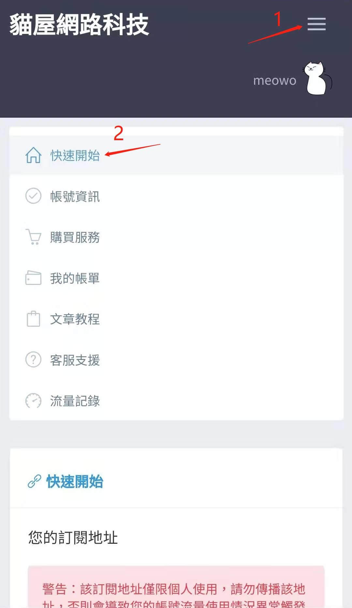
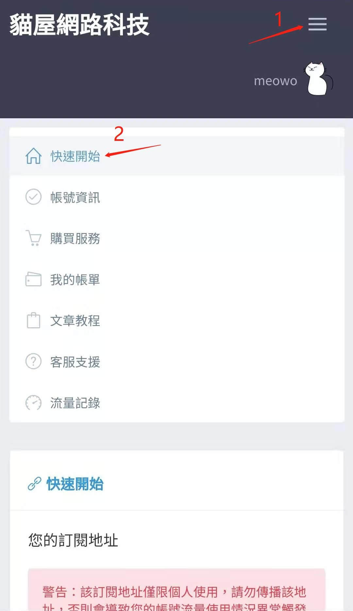

Android ShadowsocksR 3.4.0.8 使用說明
註冊並成功購買貓屋SSR服務後,進入 "我的主頁" > "快速開始"
"快速開始" 選項中可以看到您的貓屋SSR服務專屬訂閱網址,將該網址複製到shadowsocksR app 中設置後,便可以獲取您在貓屋購買的服務節點

註冊並成功購買貓屋SSR服務後,進入 "我的主頁" > "快速開始"
"快速開始" 選項中可以看到您的貓屋SSR服務專屬訂閱網址,將該網址複製到shadowsocksR app 中設置後,便可以獲取您在貓屋購買的服務節點